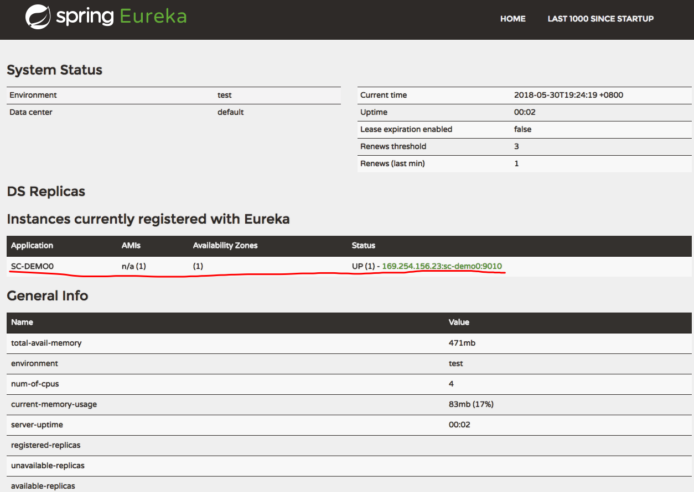

这是Spring Cloud上手系列的第三篇，代码放在GitHub上，随着本系列文章更新。
微服务下的代码共享
对于微服务间是否需要进行代码共享，大家都有不同的看法。在本系列文章中，为减少代码量，我们使用了api模块在服务提供方和消费方间进行代码共享。
在实际的生产应用中，我个人是倾向于不共享代码的。这样可以避免代码上的强依赖，加快服务构建的速度。
Philipp Hauer的两篇文章可供参考
RESTful API Design. Best Practices in a Nutshell
Don't Share Libraries among Microservices
创建服务提供者
我们在provider中创建一个服务，启动provider-service应用后，将在Eureka注册中心中看到它。
在第一篇文章提到过，provider只起目录分类作用，不是实际工程，实际工程是它下面的两个子模块api和service其中api提供客户端调用的接口，供后面使用Feign使用，service是一个Spring Boot应用，提供实际的服务。
配置模块依赖
前面提到过api模块如果没有依赖需要声明，就不需要添加build.gradle了。service则需要添加build.gradle，添加配置，设置Main-Class信息：
dependencies {
compile project(':provider:api')
compile libs.'eureka-client'
}
jar {
manifest {
attributes "Manifest-Version": 1.0,
'Main-Class': 'com.github.jamsa.provider.controller.ProviderController'
}
}
这里的compile project(':provider:api')标明service模块依赖于api模块。
创建服务
在api模块中添加远程服务接口：
public interface ProviderRemoteService {
@RequestMapping(value="/hello",method= RequestMethod.GET)
String hello(@RequestParam String name);
}
在service模块中编写Spring Boot程序入口和服务实现：
@SpringBootApplication
@EnableEurekaClient
@RestController("/provider")
public class ProviderController implements ProviderRemoteService {
@Override
public String hello(String name) {
return "Hello "+name;
}
public static void main(String[] args) {
SpringApplication.run(ProviderController.class,args);
}
}
在application.yml中配置服务注册中心地址：
spring:
application:
name: sc-provider
server:
port: 9010
eureka:
instance:
hostname: localhost
client:
serviceUrl:
defaultZone: http://localhost:9001/eureka/
构建并启动服务
在根模块中使用gradle :provider:service:build构建服务注册中心应用。
完成后使用java -jar provider/service/build/libs/sc-provider-service-0.0.1.jar启动服务注册中心。
就能在http://localhost:9001查看到SC_PROVIDER服务的注册信息了。

Comments